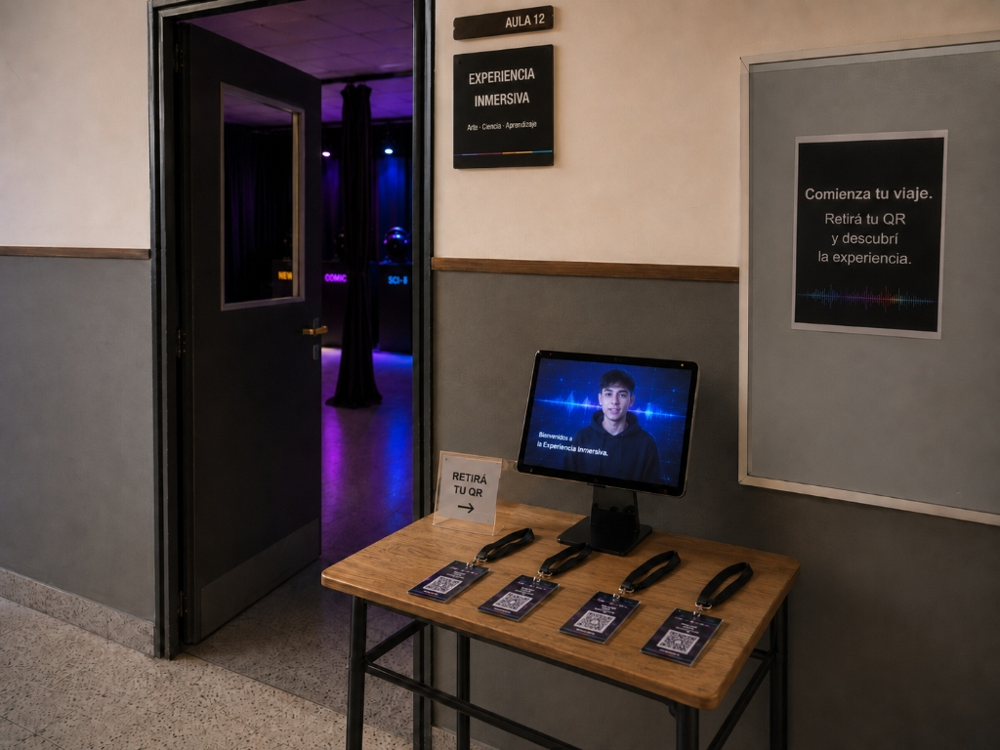
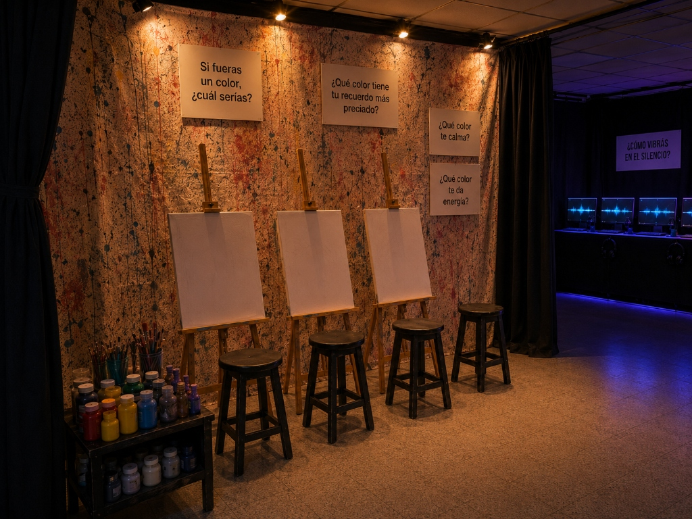
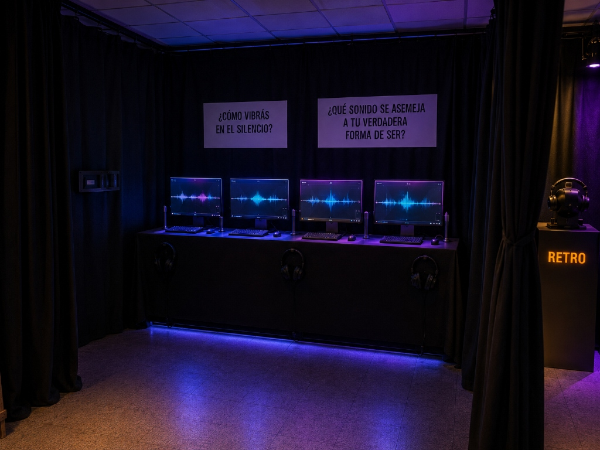
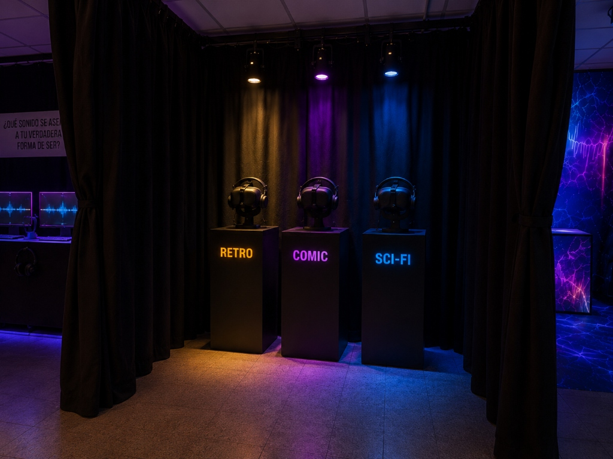
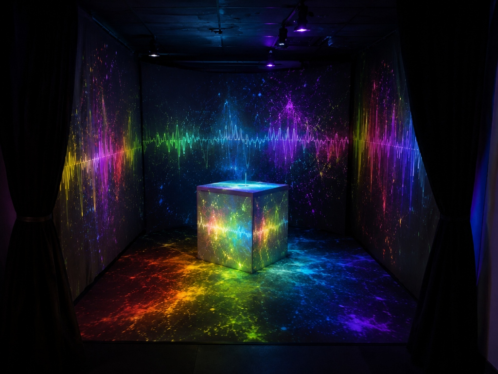
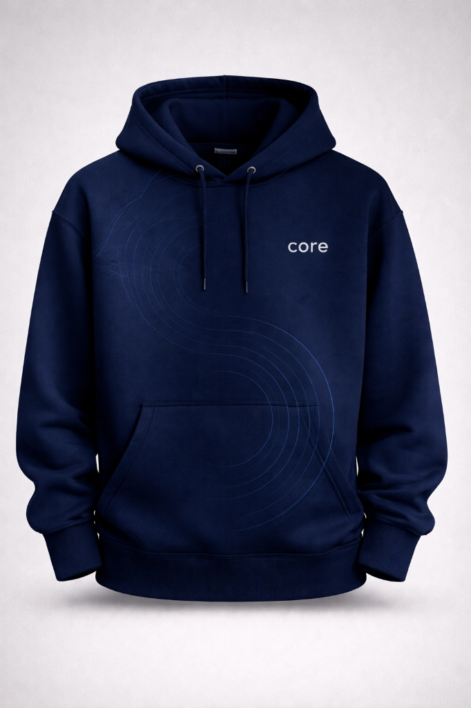
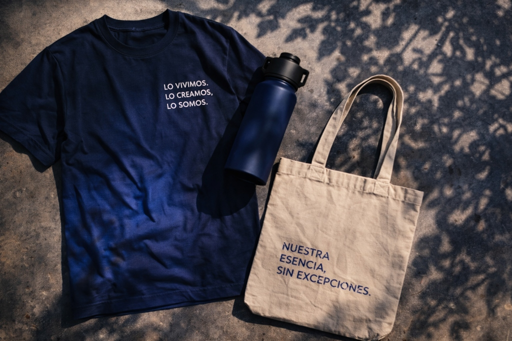
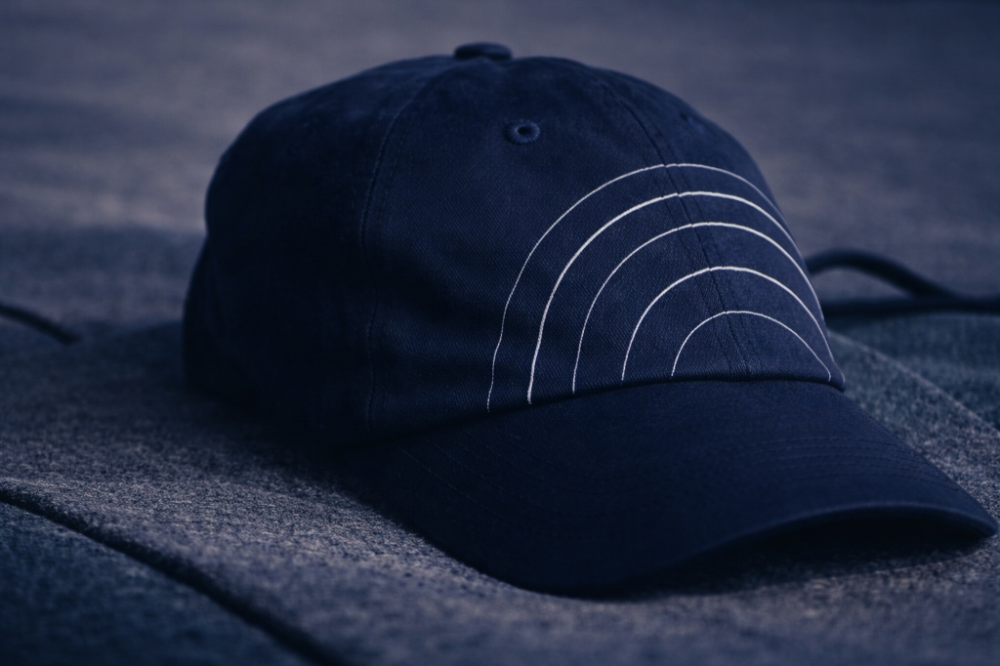

NUESTRA FORMA, SIN EXCEPCIONES.
VIVIMOS BAJO LA ILUSIÓN DE LA ISLA. CREEMOS QUE CADA DECISIÓN QUE TOMAMOS NACE Y MUERE EN NUESTRA PRIVACIDAD. QUE LO QUE ELEGIMOS EN EL AISLAMIENTO DE NUESTRA MENTE, DETRÁS DE UNA PANTALLA O EN EL SILENCIO DE NUESTRA HABITACIÓN, NO DEJA RASTRO EN EL MUNDO. NOS CONVENCIMOS DE QUE SOMOS INDIVIDUOS INTACTOS, SEPARADOS DEL RESTO.
VENIMOS A MOSTRARTE OTRO CAMINO.
CORE ES UNA LLAMADA A DESMONTAR EL MITO DEL INDIVIDUO. VAS A ATRAVESAR UNA EXPERIENCIA FÍSICA E INMERSIVA DONDE VAS A LOGRAR ENTENDER, A TRAVÉS DE TUS PROPIOS SENTIDOS, CÓMO CADA UNA DE TUS ELECCIONES INDIVIDUALES EDIFICA, ALTERA Y DA FORMA A UNA IDENTIDAD COLECTIVA. NO VENÍS A VER UNA OBRA DE ARTE, NI A CONSUMIR UN ESPECTÁCULO PASIVO. VENÍS A SER EL MATERIAL CON EL QUE SE CONSTRUYE. CADA PASO QUE DES ACÁ ADENTRO, CADA DUDA Y CADA CERTEZA, VA A DETERMINAR LA REALIDAD FÍSICA Y DIGITAL DE LOS QUE TE RODEAN.
¿ESTÁS LISTO PARA DESCUBRIR DE QUÉ ESTÁ HECHA TU HUELLA?
EL UMBRAL: DONDE EL "YO" SE VUELVE PREGUNTA.
El primer paso es cruzar las cortinas negras. El ruido exterior se extingue.
Declarar tu verdadera materia prima
Este espacio es el comienzo; acá es donde empieza nuestro proceso de autoconocimiento e introspección. Frente a vos tenés únicamente una tarjeta física; ésta todavía no representa nada, pero a lo largo de esta experiencia vamos a darle significado.
"Este audio se reproducirá en la sala con la interacción de los participantes sobre la tablet, que podrán activar el relato como guia para la experiencia"

SIMULACIÓN DE TU CREDENCIAL
Escribe tu alias de prueba en el formulario interactivo para emitir y registrar digitalmente tu tarjeta QR.
"Nuestra forma, sin excepciones."
LA REVELACIÓN DE TU TONO.
La luz deja de ser un elemento físico y se transforma en una pregunta incómoda.
El color que compone tu núcleo
Los colores parten de la reflexión de la luz sobre las diferentes superficies, así que podríamos decir que, de por sí, el color es una traducción de cómo cada cosa se quiere representar, y eso es lo que venimos a pedirte acá. No queremos que pintes algo bonito o algo que quieras que el resto valide, eso no nos importa; acá queremos que te traduzcas, que nos cuentes qué color es el que te llena por dentro.
Si tuvieras que resumir tus recuerdos más profundos en una sola gota de pintura... ¿qué tono tendría?
Si la vida solo fuera colores planos, ¿qué color serías?
"Este audio se reproducirá en la sala con la interacción de los participantes sobre la tablet, que podrán activar el relato como guia para la experiencia"

SIMULADOR DE PIGMENTO MOLECULAR
Elige tu tono en la barra deslizadora y dibuja con el cursor para experimentar cómo tu flujo de color se mezcla y sangra con el de un extraño.
EL ECO INVISIBLE.
Hay una parte de tu forma que no se puede ver, pero que dicta cómo respirás.
¿En qué frecuencia vibra tu núcleo?
Las frecuencias son parte fundamental de nuestro ser: a qué velocidad late nuestro corazón, a qué frecuencia respiramos, qué energía le ponemos a las cosas que nos gustan y nos mueven. En todo está representada una frecuencia, y dentro de todo eso, también existe una que no es tan habitual ver pero ahí está: en qué frecuencia vibra nuestro interior.
"Este audio se reproducirá en la sala con la interacción de los participantes sobre la tablet, que podrán activar el relato como guia para la experiencia"

SIMULADOR DE LATIDO SONORO
Siente las cuatro frecuencias diseñadas para la instalación. Elige una tarjeta y observa la vibración reactiva de la onda sonora.
CALMA (54.2 Hz)
Latido lento y profundo
ENERGÍA (110 Hz)
Pulso rítmico propulsivo
EXPLORACIÓN (78.3 Hz)
Vibración expansiva
INTENSIDAD (150 Hz)
Oscilación densa y penetrante
LA MIRADA AJENA.
Decide a través de portales VR cómo vas a intervenir la realidad compartida.
¿Con qué mirada ves las cosas?
Todos alguna vez de chicos nos preguntamos cómo el resto nos ve a nosotros, cómo ven las cosas, y aunque nunca lo podamos saber, todos vemos las cosas de diferentes formas, porque a cada uno nos representan cosas diferentes. En lo que algunos vemos un detalle importante, otros no ven más que un simple objeto. Y es acá en donde queremos centrarnos.
Queremos que encuentres esa forma que tenés vos de ver las cosas, eso que le da el toque especial a tu forma de mirar todo lo que nos rodea. No queremos que busques un estilo que sea el más lindo o el que esté más a la moda; queremos entender cómo se relaciona con tu identidad, tu forma de ser. ¿Sos la estructura rígida (Sci-Fi), el caos vibrante (Cómic) o la nostalgia fragmentada (Retro)?
"Este audio se reproducirá en la sala con la interacción de los participantes sobre la tablet, que podrán activar el relato como guia para la experiencia"

SIMULADOR DE PORTALES DE VISIÓN
Elige uno de los tres lentes de estilo y activa el visor para previsualizar el renderizado de la sala a través de la cámara web (o avatar simulado).
CÓMIC
Trama de medio tono y contrastes pop-art
RETRO
Scanlines analógicas y aberración cromática CRT
SCI-FI
HUD digital futurista y resplandores holográficos
EL NÚCLEO COLECTIVO.
Las puertas se abren por última vez. La ilusión de la individualidad se disuelve.
El milagro de la convergencia
Y así como empezamos llegamos al final de esta experiencia, donde todo lo que elegiste se conforma para generar algo diferente, único. Eso es lo que somos nosotros: una mezcla de decisiones, personalidades, intereses. Diríamos que es hasta imposible encontrar un núcleo igual, porque nadie es igual a otra persona; todos tenemos algo en nuestro núcleo que nos hace diferentes.
Acá las paredes, los objetos y las superficies absorben tu identidad para convertirla en algo más que solo decisiones. Tu color se trenza inmediatamente con el de tus compañeros, tu frecuencia se funde en una sinfonía masiva con los pulsos de los demás; el universo visual que elegiste se fragmenta para tapizar un nuevo mundo.
"Este audio se reproducirá en la sala con la interacción de los participantes sobre la tablet, que podrán activar el relato como guia para la experiencia"

EL CUBO CENTRAL INTERACTIVO
Mueve e interactúa con el cubo virtual central. Reacciona a la suma total de las elecciones registradas en esta simulación web.
CONVERGENCIA DE HUELLAS
Luz: Tu color se trenza inmediatamente con el de tus compañeros, mutando la ambientación de los proyectores físicos.
Acorde: Las frecuencias individuales se funden en una banda sonora única a diferentes ritmos y velocidades según la energía acumulada.
Partículas: El estilo gráfico seleccionado interviene las superficies y los objetos táctiles comunes que decoran la sala.
VESTIGIO FÍSICO DE LA HUELLA COLECTIVA
Prendas y accesorios generados dinámicamente con las tramas estéticas y colores del ecosistema creado esta noche:


